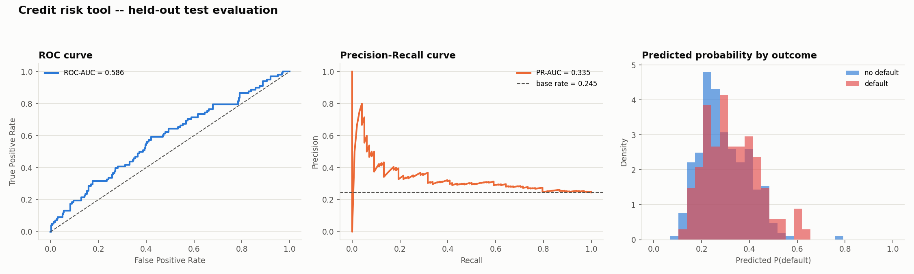
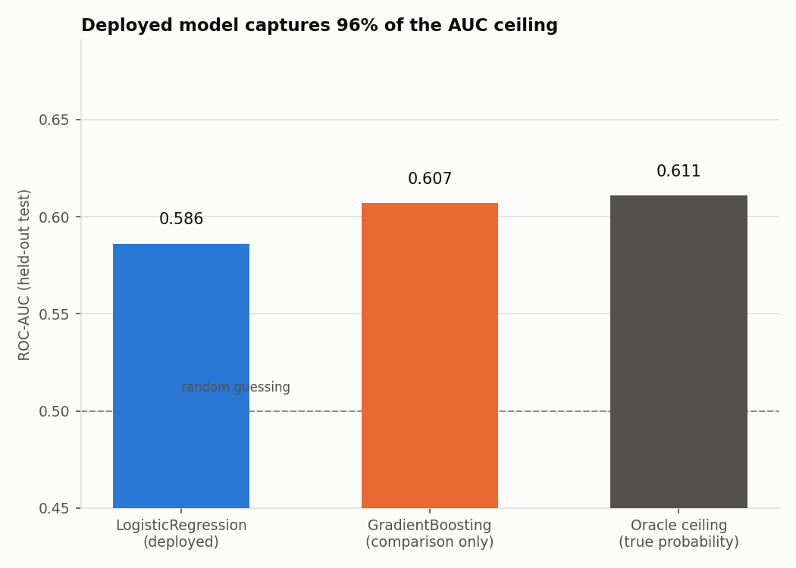
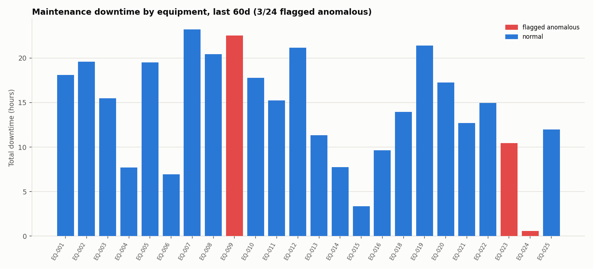
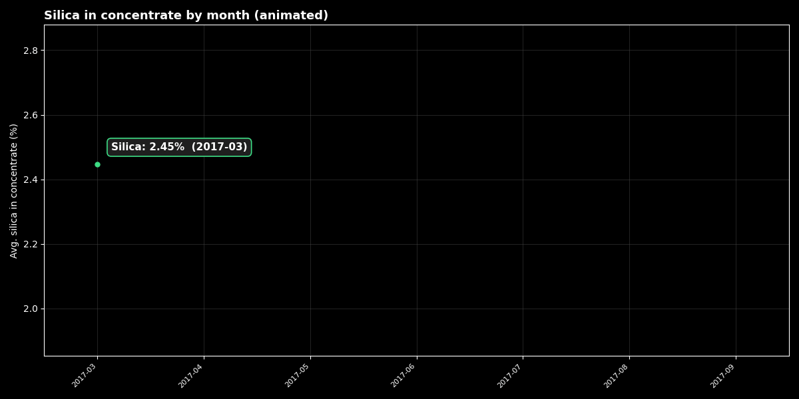
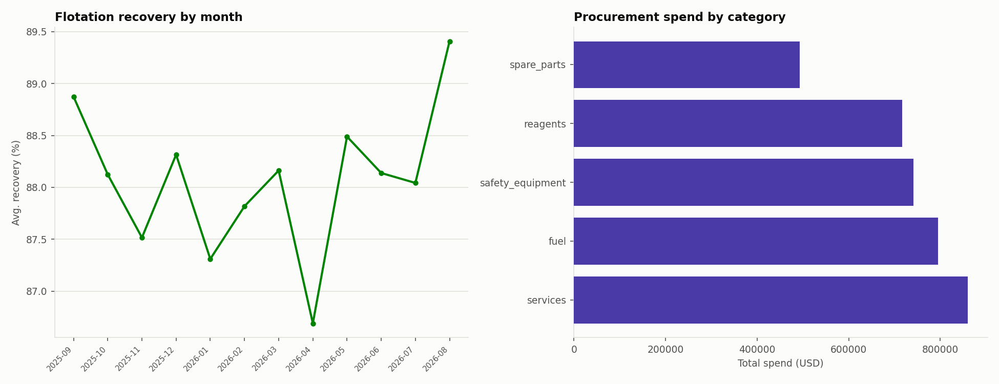

This page shows the project's results. The methodology, the design decisions and the limitations are documented in the repository's README.
`score_credit_risk` — weak, and now verified to be near-optimal, not just "honest"

Three panels, all from the same held-out test set (n=400): the ROC curve (left) hugs the no-skill diagonal — it never gets far above it, which is what a ROC-AUC of 0.586 looks like when you actually plot it instead of just reporting the number. The PR curve (center) spikes near recall=0 (a handful of confident, correct high-probability predictions) and then decays fast toward the 0.245 base rate, which is the realistic floor once recall increases. The histogram (right) makes the reason visible: the predicted-probability distributions for "default" and "no default" overlap almost completely.

`check_maintenance_anomalies` — downtime isn't the whole story

3 of 24 pieces of equipment get flagged by the IsolationForest, and the flagged ones are not simply the three with the most downtime — that's the interesting part of this chart. EQ-007 has more total downtime (23.2h) than the flagged EQ-009 (22.6h) but isn't flagged; EQ-023 gets flagged at a mid-range 10.4h, well below several normal bars; and EQ-024 is flagged despite having almost no downtime at all (0.5h) — anomalous for being unusually *low*, not high. That's expected from an Isolation Forest run over multiple maintenance-event features (frequency, severity, downtime) rather than a single downtime threshold, and it's a more realistic signal than "flag whatever has the biggest bar."
`get_flotation_summary` / `get_procurement_summary` — the operational backdrop

The GIF above animates the flotation recovery trend across the 12 months; the PNG below is the static reference for detailed reading.

The GIF above animates the flotation recovery trend across the 12 months; the PNG below is the static reference for detailed reading.